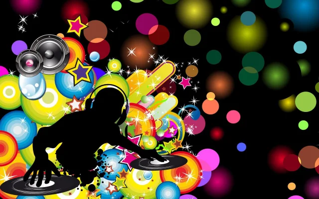
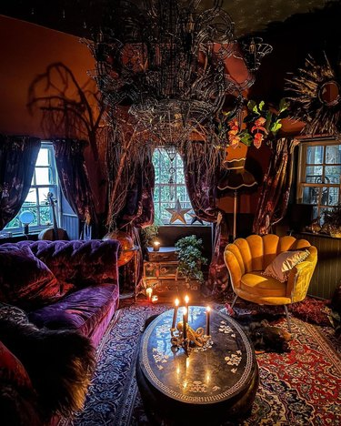
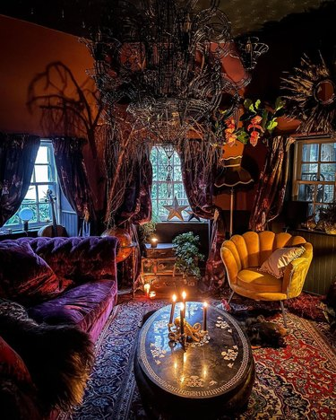
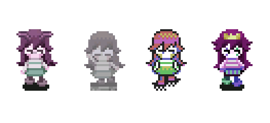
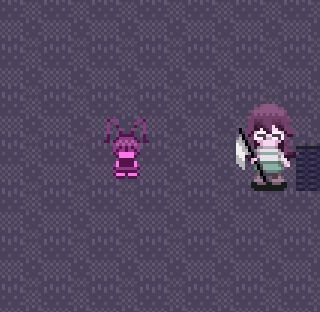
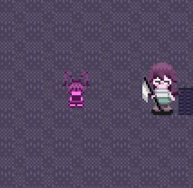
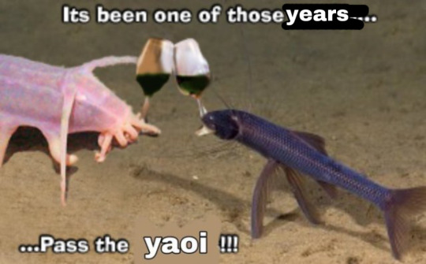

2/13/2024
I want to rebrand.
IN A NORMAL AND NOT DESCTRUCTIVE TO MY INTERNET ARCHIVE KIND OF WAY, OF COURSE.
Not in the way we usually hear that term. And god, I hate that my first reflex was to use that word when I first wrote this, because it's not what I mean. My vocabulary has gradually been reduced to nothing buzzwords. You're not off the hook either, OUR vocabulary online is in goddamn shambles for a litany of reasons that I won't go into right now, or I'd be writing a fucking novel that I'd hope to be compensated to write for on this cyber bitch of an earth.
I don't need a professional to painfully remind me just how much being raised on social media has major consequences on the brain. Things were great before money came into the picture too, BECAUSE THINGS ARE ALWAYS GREAT BEFORE MONEY COMES INTO THE PICTURE, IF YOU HAVEN'T NOTICED YET ABOUT LITERALLY EVERYTHING THAT USED TO BE GOOD *COUGH COUGH* WORLD WIDE WEB. And it came pretty early too, at 17 years old. Because it wasn't enough that I was just someone who liked to draw. I had to give and give and reward and supply.
Survival was to accurately forecast the pulses of every call and response to the pieces I drew and shared, what I believed to be success on paper, success at life itself. I got very good at synergizing with the rhythm. I leared how to predict the waves and throbs of climactic collective activity and felt smug each time I landed a perfect hit. At the end of it, I was spread thin and forgot what I was doing anymore.
I don't want to *be* a brand. I want to display my work for whoevers eyes wished to wander. To me, my work is a static visual, it doesn't ask anything of the viewer at all, it is a choice to partake in the pieces I draw and for the viewer to decide to opt in or opt out, but the piece is indifferent either way, because it doesn't care what you think or take from it. I am allowed to be selfish with my work and it's a big shame it only took until now to realize that. It's sad even, that I feel the need to put a hard boundary to preserve what is the bare minimum of being an artist. Many things interrupted the serenity of never owing anyone anything. In the digital world, art simply existing is still not enough. Messages in the pieces were no longer things to be contemplated or discussed but instead, persuasions. Once it became a persuasion, I did not find it to be true to me. I grew up on performance to pay the bills. I relied on the audience to clap and laugh at desparate stunts and hope that my show would sell. Virality was becoming a drug. And to be perfectly and beautifully frank, I'm done paying that debt.
Okay, that might be a half-truth. Two years ago, I said I was going to become a cyber-monk because I literally do not care to prove my worth and ideas to 16 thousand people anymore. But I think still, even if I can't totally go off grid, I want to be able to have these tunnels left open for me, in the case that being online benefits me for my quality of life. Plus, I want my art to be seen. What artist doesn't. I can't quit this shit cold turkey. And for those who can and have successfully managed to wrangle their ethernet cables so it's power is generated from a running pig in a wheel, good for them, but as it stands right now, I simply can't just do that. If I can do anything to restore my power back, it'll be to stay true to myself, and recover the remaining parts of me that still enjoy drawing in its purest form.
I am going to continue posting to twitter *shudders* but I am not going to pander and make myself appealing anymore. Aesthetics no longer take priority here. This is also why I stopped drawing in color. Drawing for others for 7 straight years stunted my growth. My work gets ugly. I want to draw like I did when I was 14. I want the industry to stop breathing down my neck every time I prepare to post a piece.
Indie shit is the real shit, man. I mean industry shit is real too but I cant for the life of me justify turning my love into labour to that extent. Some people are built for it. I dont think I want to be. Not on gods green earth lol. But I know I am capable as hell. I had a whole phase where I tried to work in animation at netflix. I got pretty far in the selection process but I got a rejection email saying they have filled their roles already but I am still on their list. I was so beyond exhausted by the end of it that I knew so whole-heartedly I was going to hate every minute of working there. I now work on an indie project and it's literally a dream come true. We have so much power within our work and answer to no one. Which makes our work feel so raw and whole.
All I think about is how short life is. I worked hard, I still work hard. Working hard changed my mind and body. For the worse. I have arthritis now. At age 26. I don't think about "careers" anymore now. I don't think many careers are secure now anyways. It's not that I've given up, if anything I refuse to be wrung of my happiness. I was a starving artist and I think I earned this right.
I'm fortunate now, to finally be free of this. I can finally try now that I am secure and safe. I dont have to regress anymore!! I dont have to stagnate. My work doesn't have to be false anymore. As hard as it is going to be, I want to be an artist for no reason.
Anyway, I am getting married tomorrow. I'm so happy!!!!!!!!!! Wish us well!
11/21/2023
HI, it's been like 4 quintillion years since I've last updated. I was going to say that nothing crazy happened, but actually a lot did happen so idk why I'm downplaying the events in my crazy, wild, mid 20s life LOL. My 20s are not mid though, thats for sure.
God, I don't fucking miss typing the break tags all the time in between paragraphs.
Anyhow, one thing that has probably dominated my life this year is just getting a new job. I mean I always kinda passively had this job, but now it's grown and I'm making a decent income. It's a webcomic called homestuck, you've probably never heard of it.
This version is a continuation of the original project which had ended some years ago, and the latest comic this time is titled "Beyond Canon" I got to do some official panels, even some writing for it. Kinda crazy I'm contributing to that extent. But I do feel insanely lucky to help develop a story with characters I've loved since a teen. Our entire team is very dedicated, we really want to see the best for it.


And before I continue further, Homestuck is so good when you don't have a bitch in your ear telling you it sucks.
I like working on comics! I like innovative story telling. Of course I'm gonna do work for it. Honestly, it was great for its time, and not a lot of people give credit for the cultural impact it had. For example, one thing a lot of the newer fans haven't really truly experienced is that this story was brave enough to have gay characters during a very openly bigoted time period. It actually was one of the things that helped people discover themselves and truly feel represented while questioning. People still reference how homestuck was their gateway to the queer experience. And by that I mean, finally having gay characters that were not a gross punchline, or a stereotype. I'm not saying ALL media in the 2010s didn't have good gay rep, but for a webcomic, it was pretty bold for being incredibly popular and subject to homophobia.
That aside, I think its a very fun story. As many people have very passionate complaints about Homestuck, I still think it had some net positives. That isn't to say there weren't valid criticism. I love critique, I love being critique'd. I think thats a nessacery and healthy discussion that needs to happen.
I love my team though, they are just insanely smart people and really love the story we inherited, we have so much to give now and I hope a lot of you will trust that you are in good hands with the direction of this story.
Other than that, since we finished a big work block in our schedule, I'm going on vacay next week to the creepy, mountain woods. It'll be very enjoyable. Hopefully, I won't get eaten by a bear, I need your positive energy.
Oh and one last thing, I'll be doing a whole re-vamp of my entire art gallery. Idk why I ever thought clearing cache upon refresh was a good idea, and not compressing any of my images, and not making them mobile friendly. God, that was stupid. And ambitious. Well, I think thats pretty much it.

3/6/2023

hi yall, i am so sleepy rn and I have no energy to make my grammar all nice and neat ^^
i noticed places like tiktok or online spaces that have a lot of kids or "gen z", as I like to call them, are really interested in early 2000s old web and aesthetics that were prevalent on computers and advertisements at the time, such as frutiger aero. (personally, the most nostalgic for me). For instance, since 2019, i've had my start up skin based on windows xp because I missed seeing it so much. even back then I had the bliss.png background for nearly the entirety of my young internet career.
don't mind the name "pup" its sort of a cute little inside joke i've always named everything with

then we have our UI design and advertisements for common technology. I guess the idea was that "we could be living like the future!" and add some sort of sci fi element into all our tech UI. it was around when smart phones started coming out... which for its time, it WAS a very advanced technological leap. So its no wonder they sort of pushed this consumerist design.
i'm proud to have lived through this era that lots of people wish they could have experienced. I also see other aesthetics that didn't really have a proper "name". Such as frutiger metro. which really takes me back to MTV? and graphic tees....

while I don't consider this metro, it was defintely adjacent to the graphic design of that time and I had this lucky star pic as my background for a whole year!
Then we had something called global village, which had this jazzy, world, clip art style. usually this aesthetic took place in business oriented places. I recall the Target store Pizza hut eating lounge having art on their wall with this sort of vibe. I'm wondering if they haven't really updated it much since then, actually.

With these, you can always expect to see a spiral or various squares and triangles. It had an artsy picasso-like composition using warm tones and harsh edges. I liked it! I always associate it with coffee. I personally wouldn't mind seeing these again.
There is another thing called whimsygoth. Just think witchy looking architecture. Lots of metal vines, spirals, red velvet, lacy drapes and lots of dark purple. It was very fantastical but also very calm and dimly lit. I would love to stay in a room similar to that, I rarely enjoy bright light in my room anyway.
 

I hope you find all these cool aesthetics as interesting as I did! Growing up through these times were fleeting and I wish I was able to appreciate it more. But I think everything we live in doesn't feel impactful until it ages, so it can't be helped. Who knows, maybe all the things we enjoy now will be appreciated in an even younger generation.
oh my god im so drowsy I need a coffee -_-
HAVE A WONDERFUL MARCH EVERYONE !!!!!!!!!!!!!!!!!
1/31/2023
I had a spike of creative energy so I poured that into my comic. I was pretty proud of it, but I don't feel like its entirely "me" yet. I am still falling into patterns of pandering to others to make things more digestible and I realize that I am not drawing from the heart.
My 12 years of drawing on the internet and FOR the internet sort of made me equate virality as a form of self worth. There were so many times where I drew something because I knew it would take off. I actually got pretty good at it. I knew exactly what trendy beats made something good and would potentially spike my analytics. But it wasn't MY art. It's art for others. I pandered to certain demographics because the recognition made me feel good. Every influx of followers would give me a high.
Eventually, I just lost all subjectivity about it and I couldn't get excited anymore. Not that I didn't appreciate the people who enjoy my work btw, please don't misconstrue that. I am talking about how I used it to define if I mattered or not, that I became numb to it and that high I chased was dwindling.
On that note though, there are no words to describe how grateful and thankful I am to be supported and to live on my art and have people recognize my efforts, so I will never ever take that kind of support for granted. It's why I am here today and it's even why I am still trying. It's why I can have food on my plate and why I know that every single ounce of support is irreplacable and matters. I wish I could offer more in return so I just do my best to help other artists with advice and how to start things. It's really the least I could do. I am NOT a gatekeeper!!!
I think ultimately, I just want to draw what I REALLY actually feel and want to see. None of the weird safe, carefulness that I did in my Vigilante comic. I know I can do better. I know I can tell better stories. It's not that Vigilante was bad. It's just that I know I can do better.
That being said, as far as personal projects go...
Since I finished my personal art endeavors, I am going to be working on Lucie again. If not the development end, more of the story side. Just more writing and clean up. It was originally a yume nikki fan game for the game jam, but since I didn't submit it in time, I'm free from the general yume nikki restrictions and I can go all out. I realized walking simulators are not for me. Of course the yume nikki games are my literal biggest inspirations but for my game? It needs a different flavor. Lucie was turning out really good though! I am excited to begin work on it again! There are things I'm not too happy with yet but I don't think anyone launches a game that they're 100% happy with. So it goes....
That reminds me, I saw Dream BBQ trailer from Joel G. It looks AMAZING. I am just looking forward to all the new things people are making.
OK! I'm done talking. TTYL!!!!!!!!!!


 

1/15/2023
Is it happy new years? Or happy new year. I see the plural version a lot sometimes and I use it more than "happy new year". I think it's cute idk.
My month is going alright! I learned several lessons. Maybe consider these lessons for yourself if you ever run into them.
- Don't take ashwagandha (the stress relief supplement) liberally. In December, I was looking for work and I got so stressed out by job hunting I couldn't mentally withstand the pressure all too well. I was really desperate for some way to quell my stress and I was doing everything I could. I heard about this supplement and I figured maybe it wasn't too effective, like placebo and possibly as potent as b12 or something. I was so fucking wrong.
So I took way passed the recommended dose. Every 4 hours I would take one. I did that for a week. I was definitely cured by then but not in a positive way.
I ended up developing anhedonia. I lost nearly all emotion. I couldn't cry, I couldn't feel sad or angry. Worst of all, I couldn't feel pleasure, in many senses of the word. Sure, my stress was gone. In exchange for literally everything else. Don't get me wrong. I'll take it again, but not 4 times a day like I did. I do recommend it for the normal dose. Just take breaks because when I came off of it, I had the most debilitating emotional crash. I cried every single day and not even my mood stabilizers could help. So be careful.
- Don't let others drain your happiness. Sometimes we get caught up in comfort of familiarity and we stop seeing things as they are. Sometimes we start to believe that the small instances of dread or apprehension we detect in certain moments are just an over reaction to something inconsequential. Even more, sometimes we get so used to the slow burn of being miserable that we start to train ourselves to be comfortable with it. You don't feel compelled to do anything about it since you're already in this limbo state cycling between positive and negative feelings and its normal to you. Then you talk to more people outside of your head and you start to realize these gut feelings were always there and always real. You get a taste of what it's like to experience your thoughts without emotional impairment or even percieved judgement.
Fear of judgement. This was the invisible force that haunted me for months and I finally figured it out. When I sensed contempt, I let it fester. It's hard to focus on the things that matter when your brain is constantly critiquing your every move done by the emotional damage left by someone else. Even when alone, the flashbacks of bitterness would cloud my mind and send pangs of failure and shame of what I worked so hard to do and be. Its ridiculous because I know I am above it all. It shouldn't even affect me in that matter. Sadly, no one is immune to toxicity and you'll be surprised to see that even the most strong-willed people can resign their pride so easily to the wrong people.
I have some outgrowing to do. I have made many decisions for future Andi that they'll thank me for later. I learned quickly that protecting my peace and mind from places or people that no longer benefit me is a faster way to ensure true happiness.
- If you're struggling with money and buying groceries, consider applying for EBT. There is absolutely no shame in it. The older generation used to openly detest people who relied on welfare to survive. So reasonably, a lot of people are still feeling the stigma. But its 2023, you cannot convince me that these fucking grocery prices are supposed to be normal inflation rates. It's just not realistic. I bet some of those same people felt the shake of the job market and are awkwardly applying for it too because they got thoroughly body slammed with financial struggles post-pandemic. So who cares. If you make enough below the threshold, you may qualify very quickly! Make sure to check your state for specifics. Some are better than others but it's really worth the try. I got approved within 3 weeks and even got my card today. So I'll be able to get groceries with no problem!
-Play your favorite old video games. Emulate them, buy an old console, install custom firmware, homebrew whatever. Do anything like that, and I can assure you instant happiness. Sometimes you'll play an old game as an adult and a lot of dialogue or situations that went over your head as a child will feel different and maybe even better as an adult. Do IT!!!!!!

12/4/2022
I'M !!!!!!!!!!SO YEA, tldr, me and my boyfriend (now FIANCE!!!) went on a vacation to Chicago (a place very dear to me since I was a child) to spend our anniversary after being together for 6 years. We had done TONS of things for the whole week and around the last day, we drove into my hometown across the border and hung out at the park I used to go to as a child. We walked together through the park while I reminisced with him. We were both so calm and at peace on this walk and it felt like we were the only two people in the world.
At some point down the trail, we saw a fuzzy black and orange caterpillar on the ground that seemed to be crossing. We looked closer and we discovered that it had died. I couldn't really explain why but I started to cry. It seemed like it was trying to cross to the other side but froze and died and didn't make it.
I don't know why but it hurt my heart so bad. We felt like we couldn't leave our spots until we did something about it. I guess we felt like we witnessed the determination and will to survive by this caterpillar and got so touched by it, that we didn't want its efforts to go to waste. Leaving it alone in the cold felt like we satisfied the indifference of nature.
We grabbed a leaf and brought it to the grass and covered it in leaves and I placed a white fuzzy dandelion on it. I started lightly sobbing but my fiance comforted me and we kept walking.
The caterpillar was called an Isabella Tiger Moth sometimes called wooly worms. I don't know how to describe it without feeling a little pathetic, but that occurence reminded me of the innocence I had when I was little. Lifting up caterpillars and putting them in safer spots with a leaf. As an adult, I still have this pure innocent child inside me piloting me for random moments. We continued onto the trail feeling better since we did something about it.
Afterwards, we visited my childhood home. It was dreamlike. Memories involuntarily replayed of my childhood. Seeing myself ride my bike up and down the street and loving the smell of grass and flowers in our front yard. So many memories fading in and out of my view. It looked exactly the same. In 18 years, the place didn't move. The broken down deli store on the corner was still broken down. The houses still had the same trees. The fences were the same fences my parents installed when I was 9 years old. It is rare to have have the privilege of seeing my birth place intact. I felt really fortunate to be able to just return back in spots I spent my earliest moments of life as if I had teleported there from the past in an instant.
Later on, we had plans to go to Navy Pier. We arrived and decided to jump on the ferris wheel. It was FREEZING cold and we were worried we'd get on it and freeze from the wind since last time I went, the carriage had no windows. Thankfully this time it was enclosed with a heater. I remember getting on and giggling like crazy because I knew in the back of my mind, this is the perfect time to be proposed to. He kept laughing too and being like "What? Haha.. what?" and I just said nothing. I lied and said that I thought about something funny.
We looked out to the city and the sun was setting. It looked incredible, the sky was like a dome of clouds and light rays with the city scape glittering in peripheral to the sun set. After some silence, my fiance inched off the seat to lead his knee to the floor. I covered my face with my scarf and he pulled the ring out. It was a rose gold ring with small vines encasing a transparent pink morganite gem with flairs of tiny diamonds surrounding it. It was the most beautiful arrangement of colors and artistry. He started crying by seeing me so emotional. He asked the question and of course I said yes. We hugged tightly and I told him he already knew the answer to that. It matched my skin nicely when I put the ring on. We had a dream-like rest of the day. We went to a christmas light festival and we ice skated for what felt like hours. It was a moment that I wish I could trap in time and be able to visit it whenever I want. Things could not have played out any better and I am going to remember this experience until I die.
So thats how I got engaged! I wouldn't ask for things to be different right now. I feel like the luckiest person in the world. Now I am home from what might have been the most phenomenal trip I've been on. This time now, with the love of my life!
Now for some other things on my mind.
So christmas was one of my favorite holidays. The festive feeling and rising happiness in my mind down to my stomach would help me get through the days and feel a lot of spirit. I looked forward to decorating, seeing others decorations, eating food, spending time with loved ones, listening to christmas music and gift giving. However, every year I get older, the child-like excitement and festivity only seemed to decrease. The last festive feeling I've had was last year. I think it was truly dwindeling around then. This year, I feel absolutely nothing. It saddens me that it got like that when I had been actively been trying to prevent it. Was I constantly chasing a childhood feeling? Is it unrealistic to keep wanting to hold on to a holiday that hard? It must have been a combination of things that went on in my life last year. I considered that maybe getting older and wiser just makes you see everything differently and therefore, fabricated societal ideas just don't hit like they used to since you see the world for what it is. But I hate that! I don't want to be hardened by the world anymore.
This is so pathetic of me because I am already happy! Are festivities not hitting anymore because I relied on them in a therapuetic way from what I was going through? Maybe thats it. Maybe I am not hardened by the world and rather I am so at peace with life that nothing could improve it since there is nothing to improve. I'll see how I feel by new years. Then I can truly reflect.
Despite that, I hope everyone can enjoy the holidays! I know not everyone celebrates so in that case, I hope you have a great end of year to send off into 2023! (Lord, time flies so fast!)
11/21/2022
hello...*peeks around*lets start with the bad things that happened and then end it with happy things
- carpal tunnel had progressed to stage 3 (oh my fucking god it was probably the worst pain in my life) the pain even moved to my left hand which I don't even understand how thats possible. I also noticed that the pain was spreading to my shoulder. I had to take nearly a month off just to heal it. Defintely a low point. I got severely antsy because I couldn't even hold a cup of water without it feeling like there were razor blades in between my tendon strings.
- I still have a love-hate relationship with social media and being miserable on it. I know its like "well andi, just log out." I shan't. You don't understand... I can't just log out. I am tethered to the internet as if it were an extension of myself. Its literally my third mind, where the three states of living is being awake, sleeping, and internet. This is normal for me. Maybe even for you. I just cannot untether even if there was a gun to my head. It makes me miserable but I can't stop INVESTING. I love it so much.
- I am still so very fucking poor and I feel like my career got totally fucked after the pandemic. I was finally seeing an uphill climb until it happened. Lots of opportunities fell through and it was back to square one. I miss when art was fun. Monetizing my art was probably the worst mistake I've ever made.
NOW... for the great news!!
- carpal tunnel and tendonitis is 98% GONE!!! I still feel some moments where I get random twinges of pain, but its totally fine otherwise. I really thought I wouldn't get there! So happy its normal again...
- I got prescribed lamotrigine (a mood stabilizer) to finally confront my bipolar disorder. And holy fuck. I should have been on this shit a really long time ago. No wonder adhd meds weren't enough. It was the fact that anything slightly distressing or upsetting was enough to completely tip me over the edge and knock me off balance, forcing me to just shut down for weeks on end, and I could barely take care of my needs or let alone my living space. I operated like that for years, hoping a manic state would bring me out of it. Manic episodes brought out psychotic symptoms. I've had them since I was a child, but I am learning that the older you get, the harder it is to stay grounded and lucid. I needed to get better control of it before it gets very hard to come down. Which the medicine helped immensely. I can't even put into words how much happier and stable I am.
- After turning 25, I feel like I finally know more about myself as a person. The blurriness of my inner identity gets more solid every month into my mid twenties. I love this age. I think I used to get scared of getting old. Getting older has done nothing but make me happier.
- My friends make me happy and since I've gotten medicated, I feel like I can spend time with them in a more healthy and fulfilling state. No more social anxiety to get in the way of doubts and fears of vulnerability. Now I am just appreciating my time with my loved ones without hesitation.
Thats the run down. Thanks for reading if you did. Have a happy rest of your year!!!!! I'm so damn excited to get into the christmas spirit. I'll be seeing snow soon. GOOD NIGHT EVERYONE!

8/12/2022
Wow, so its been a few months. Not much to report on, really. I'm actually in a bad mood right now, haha. I am mainly just experiencing what every mid-20s person attains at some point, a crisis of some kind. I am too tired to even get into it. I just really need to re-evaluate the direction of my life. That's a topic for another day. In the end, I'll be fine! There are already measures being taken to ensure a better future for myself!
Aside from that, I noticed I've been neglecting my website. I really wanted to keep it at consistent updates but I've been severely burnt out. I dealt with a really bad case of carpal tunnel + tendonitis some weeks ago, hindering me from even being able to do art and work. It was the worst I've ever had! Another trigger to my crisis. I never want to experience that again! Even now, by typing, I am really pushing the limits to my wrist. I'll cut it short for now. I'm doing okay! Hoping to get out of this confusion state of where I want to be right now. One more month until summer is over. I am so very pumped for the fall. Fall and winter are my favorite seasons.
I also want to apologize for my art gallery being severely un-optimized and slow to load. I gotta figure that out at some point when I have time..
Anyhow! I hope everyone is staying safe and doing well. I know the world is strange right now so everyone hang in there. Don't push past your limits if you don't need to. Or else you'll turn into me ;-). Good night!

3/1/2022
I am currently recovering from a migraine. But before I take a migraine nap, I wanna celebrate reaching 10,000 views!!! I was so surprised but it really means a lot that anyone actually cares about my site. Thanks for the extremely kind messages in my guestbook. I re-read them daily. Thanks for taking the time out of your day if you write in there. It means a lot to me and I am very grateful. I hope to update my web help section as well in case anyone outside of neocities is interested in making their own site. Do not hesitate to email me for specific help!!! I love to help.
I really like to visit "latest updated" section of neocities to check out the newest sites. It's just really nice to see everyones unique style. I have been fickle about the design of my own site, but I think I'm really settled on it now after adding the iframe stuff. I can't believe I'm achieving html/css milestones I thought were too hard to reach!
I'm trying to figure out what new stuff I wanna do since my site is mostly done now. I have a lot of projects in mind but now that I'm doing a lot of website stuff, I like the idea of hosting a little javascript game on here. Maybe a short little VN or rpg-style thing. I have no clue yet. I was going through my google doc projects to see if theres anyhting I could pick up and re-create into a game. I'll see if I have time.
I'm also dealing with some personal stuff which is holding me back a little from starting a new project. I've been thinking of emulating some video games to de-stress. Theres this game I used to play on the PS2 called "Neopets the Darkest Faerie"

I got so far in it as a kid but the disc had a bug so I could never finish it up to a certain point. I was supposed to collect 4 pieces of an item to progress, but the last piece was missing and wouldn't be logged and it literally glitched itself out of the game. It was a common glitch on gamefaqs so if I wanted to progress, I'd have to start over the ENTIRE game from the beginning to hope that maybe it doesnt softlock this time.
Now that I have a computer that can easily emulate ps2 games, I might try playing it again! I really wanna finish that quest that stayed unfinished from a decade ago. That also sounds like a good concept for a game... a quest that stays perpetually frozen in time.... hmm. Ok well, thats all from me. We'll see what comes of it. Peace!
2/20/2022
Heh, I found the tweet I made that got me to make my own website. I had no idea it would become such a relatable statement, but that was sad to me. Twitter is really frustrating. I hope from this point forward, I can start having a healthier relationship with my art.
2/18/2022
Nice, we have the first diary page. And knowing myself, it's only going to be updated like once a month. But thats ok! I am not a person of habit. I like the idea of recording segments of my life whenever I feel it to be important. And my long term memory isn't very good. For example, a lot of the past 10 years are a blur. I only seem to have enough storage in my brain for the last 6 months and then it deletes itself. 2020 was defintely one of the worse years, where I don't remember much of anything at all. But then again, it was the year a lot of shit happened. Do I need to elaborate?

Anyway, i've been sulking about my art and my self expression since the year started. I used twitter primarily as a way to recieve income. I do commissions. So far, I've been doing relatively fine in that format, however, some things were weighing on me. Why do I feel so stiff and fake? Why does drawing feel like a chore? Why am I starting to dislike art? Why does my art feel unrecognizable to myself? I kept trying new things, new artistic ventures, but nothing was scratching that itch. 
I was venting to my boyfriend about how the internet is so simplistic nowadays. There's not really many places I have total control over my image and expression. One of my biggest epiphanies during that conversation, was that I really do tie my identity with my art. Trying to race the twitter algorithm, staring at my analytics, placing my value on follower count, all that ridiculous stuff.... It was bringing me down. It was killing my spirit.
I ended up taking a crash course on HTML and I really needed to take back control to feel fulilled in my art again. It was liberating to say the least. The last place I can think of with html/css customization, is Tumblr. And don't get me wrong, Tumblr has its infamy, but I am very thankful it gave users access to that. Due to that freeform style of blogging, the communities got so niche, and thats what I loved. You can't find that super niche shit on twitter or other social medias. I do think they leak into other websites but they dissipate rather quickly. And I think thats because of the prioritization of minimalism.
Speaking of Tumblr, a lot of my blinkies and images are hosted on there. I really worry of the day Tumblr shuts down. Years and years of content lost. I hope that doesn't happen. I love my tumblr blog despite barely going on it anymore. It has lots of history. I think a lot of people would be sad too. If tumblr does shut down, I'd have to migrate all my images, lol.
I also have a HUGE disclaimer about my new site. I am INCREDIBLY novice at html, I've been looking at other websites to find good references, as well as resources! But I will be completely frank with you... a lot of my code is very messy, and I had to jerry-rig a lot of my pages. I still don't know how to format my files. I still don't know what a webring is, and at this point I'm too afraid to ask. But oh well, I suppose we start somewhere. I think this whole thing has been therapuetic to me. I really wish other artists like who struggle with their self-expression, consider doing something like I did. Because I realized over time, that the main culprit is how absolutely fucking dry the internet has become for creatives.
Also!!! I found one of my old pixel gifs that I created on another website! I was actually really flattered it was there. I'll share it here too because I still think its cute.

That was a rather long diary page. I think my next pages will be simpler. This weekend, I'm going to a nice plaza with my boyfriend. I'm looking forward to it. I've been glued to screens too much. I'm going to try to convince my boyfriend to make a neocities account too. I think he'll like it a lot. He's a software engineer, and feels the same way as I do about the modern internet. it's 2 am now and I really should be going to sleep. Good night! ^q^